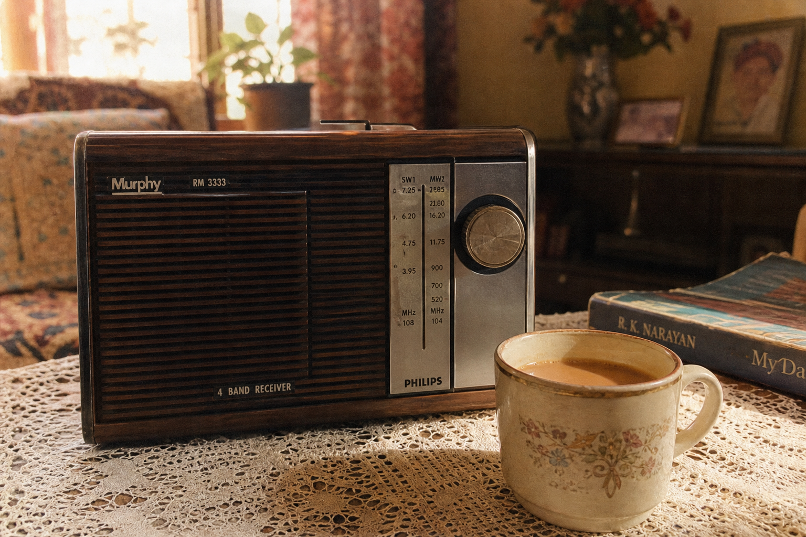

कार्यक्रम
हवा महल, छाया गीत, जयमाला और संगीत सरिता की यादगार सूची।
सूची देखें
चलती GIF जैसी यादेंहवा महल, छाया गीत, जयमाला और संगीत सरिता की यादगार सूची।
सूची देखेंनिरमा से विको तक, वे धुनें जो रेडियो बंद होने के बाद भी गूंजती थीं।
संग्रह खोलेंरात आठ बजे की कहानी, कलाकारों की आवाज और खामोश कमरा।
नाटक सुनें